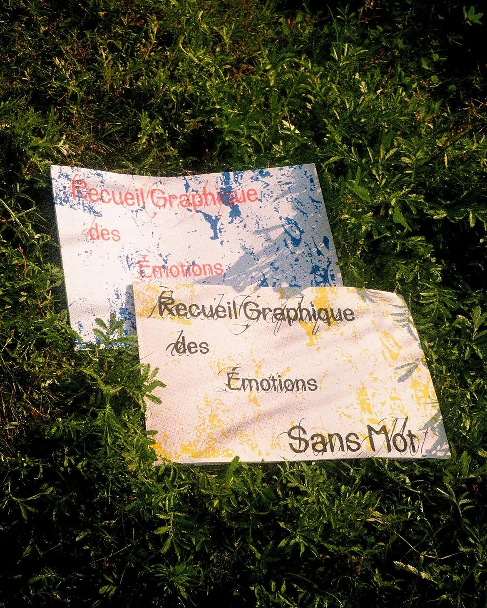
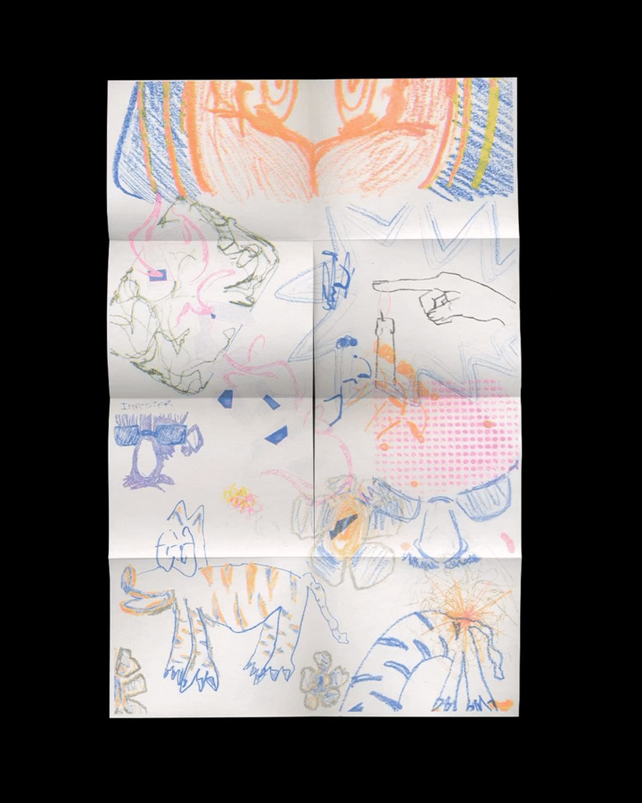

How can we visually represent emotions that words cannot yet name?
The emotional vocabulary at our disposal is sometimes too limited to describe certain complex human experiences. Inspired by John Koenig’s Dictionary of Obscure Sorrows, we created new words, based on carefully considered etymology, to name specific but often unexpressed emotions.
Using these invented words, we invited the student community to give them form through illustration. We provided them with various media—pastels, felt-tip pens, lithographic ink—their choice becoming an intuitive extension of their feelings.
This 12 x 18-inch collection invites complete immersion in the emotion experienced. The three-layer screen-printed cover incorporates a sewn-in pocket on the back, containing a zine printed using four-color risograph printing (CMYK). This zine offers definitions for five nameless emotions. Once unfolded, it reveals a collage poster where all the drawings converge in a sensitive chaos.
The Graphic Collection of Wordless Emotions becomes an object of reconnection, release, and resonance between shared experiences.



Credits
The Graphic Repository of Nameless Emotions is an action project we carried out as part of the Design and Social Change course (DGX2022), during the Winter 2025 semester at UQAM's School of Design under the supervision of Cath Laporte.